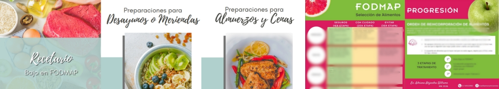

Nuestros Combos Especiales

Combo SIBO: Guía y Recetario para una Digestión en Paz
- Solución integral para el Síndrome de Intestino Irritable (SII) y SIBO.
- **Guía completa:** Entiende qué son los FODMAPs y cómo aplicarlos en 3 etapas.
- **Recetario exclusivo:** Más de 20 recetas deliciosas y aptas para dieta baja en FODMAP.
- Aprende a identificar alimentos "seguros", "con cuidado" y a "evitar".
- Consejos prácticos para manejar el estrés y mejorar tu bienestar intestinal.
- Preparaciones saladas (pescado, pollo, ensaladas) y dulces (budines, galletas).
$10.000 ARS
¡Lo quiero!